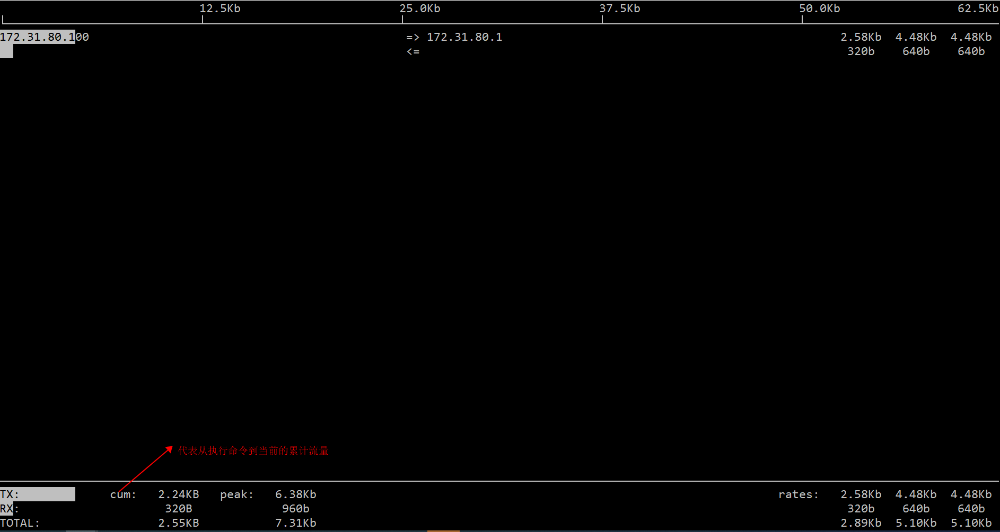
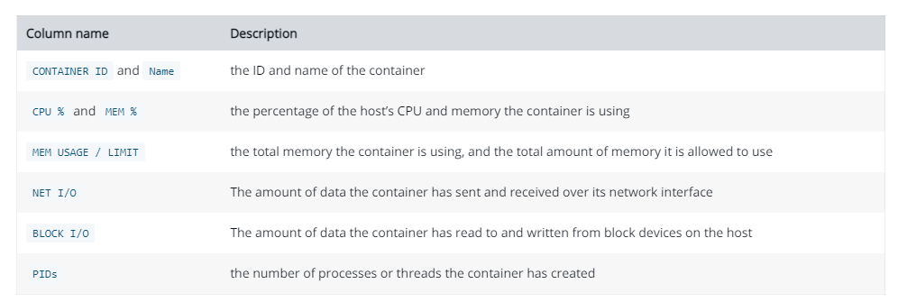
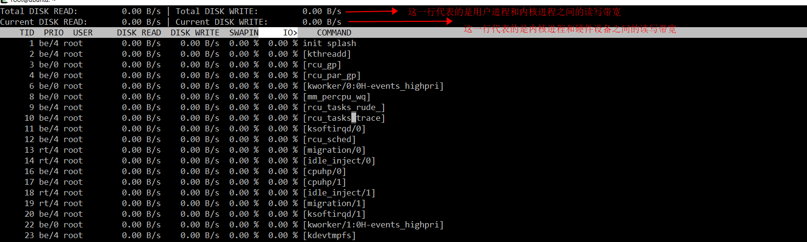
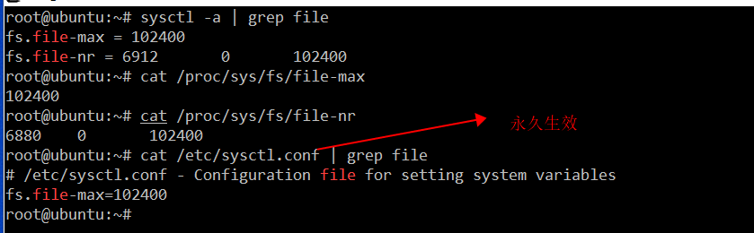
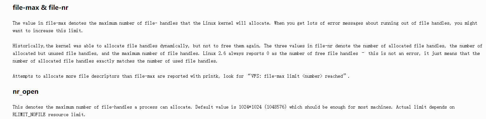
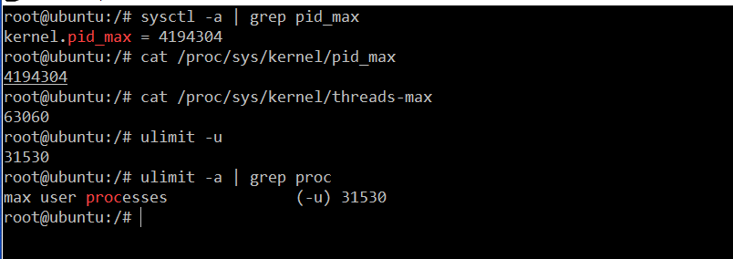

背景
在Linux运维过程中，经常需要排查服务器的异常情况，当服务器因某些不明原因down机或者不响应，或者监控告警系统提示服务器某些指标出现异常，往往需要登录到这些服务器上进行异常原因排查，这时就需要一些常规的命令快速定位问题的所在，因此熟悉这些命令的使用，快速读懂它们的输出就非常重要。
常用方式
服务器一般有几个核心的指标比较重要，下面根据具体的指标，展开分析如何进行排查分析。
实时查看
CPU
1 | top |
Memory
1 | free -lh |
Network
流量情况
iftop
1
2man iftop
iftop -n -i enp0s3
ifconfig
netlog
1 | apt install nethogs |
Socket情况
netstat/ss
1 | man ss |
容器情况
1 | docker stat |

Disk I/O
- iotop
1 | iotop 默认按照Tid显示，可加参数-P按照Pid显示 |

- raid
1 | # 软raid的查看方式 |
File System
文件描述符
系统级别
1 | sysctl -h |

这里用官方文档解释一下file-nr、open-nr、file-max分别代表的意思

用户级别
1 | ulimit -h |
inode
1 | inode在文件系统初始化的时候通过-N 指定数量 |
磁盘分区及挂载、用量
1 | 查看磁盘情况 |
Process/Thread
- Pid
1 | 系统对Pid限制 |

在Linux操作系统中，线程和进程的数据结构是一样的，只不过线程是通过clone的方式创建的共享父进程的内存，而进程是通过fork产生的，拥有自己独立的内存。
pid_max代表的是独立内存的进程的最大数量
thread_max是代表的是共享内存的进程的最大数量
- 进程数/线程数
1 | 查看进程 |
- 僵尸进程
1 | 查看zombie |
如何处理僵尸进程
可以kill僵尸进程的父进程，这样僵尸进程就成为孤儿进程，会托管给init进程，init进程会清理僵尸进程
历史记录
sysstat
sysstat服务启动以后，每十分钟收集一次系统系统状态信息（定时任务：cat /etc/cron.d/sysstat），数据记录在/var/log/sa目录下。配置文件在/etc/sysconfig/sysstat。
1 | man sar |
系统日志
1 | man journalctl |